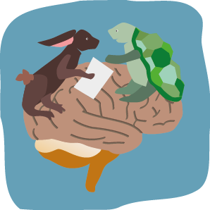
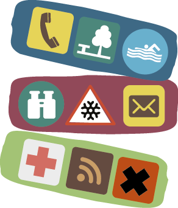
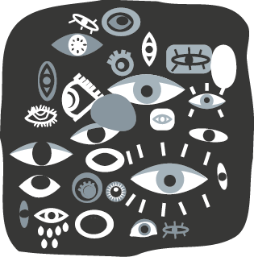
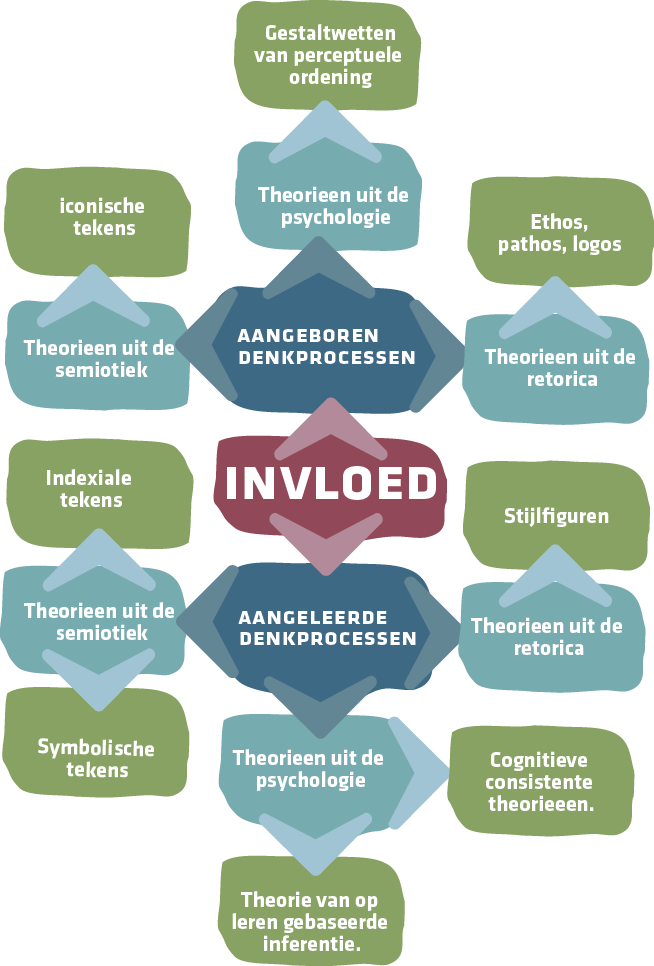

5. Conclusies
Het interpreteren en overtuigd raken door visuele communicatie is het resultaat van ingewikkelde processen in de hersenen. Toch kost het ons schijnbaar geen enkele moeite om de wereld om ons heen binnen een fractie van een seconde waar te nemen en te interpreteren.
Het eindproduct van het waarnemingsproces is zo overtuigend dat het makkelijk wordt verward met het met hetgeen zojuist is waargenomen zelf, terwijl het in feite niet meer is dan een weerspiegeling daarvan. Wat mensen ‘zien’ is wat het brein er van maakt en behoort feitelijk tot de output van het visuele systeem in de hersenen.
De output van dit systeem is gebaseerd op aangeboren- en aangeleerde psychologische denkprocessen, maar ook op semiotiek en retoriek.

§5.1 De rol van psychologie in grafisch ontwerp.
Perceptie wordt sterk beïnvloed door veel verschillende psychologische aspecten zoals herinnering, motivatie en emotie. Het vermogen om informatie van buitenaf te ontvangen en te interpreteren lijkt zowel aangeboren als aangeleerd.
In de psychologie wordt er gesproken van aangeboren gestaltwetten die ervoor zorgen dat mensen beeldelementen makkelijk kunnen groeperen, waardoor vormgeving overzichtelijk op ons overkomt, deze wetten maken het interpreteren van informatie gemakkelijker. Vormgeving heeft daarbij de unieke mogelijkheid om informatie te benadrukken of af te zwakken: om te vergelijken, groeperen, sorteren, selecteren, weg te laten of herkenbaar te maken. Voor sommige mensen lijkt vormgeving vooral samen te hangen met individuele smaak, maar dankzij de psychologie weten we dat vormgeving niet per definitie zo ongrijpbaar hoeft te zijn.
Ook is duidelijk geworden dat perceptie sterk wordt beïnvloed door aangeleerde denkprocesssen. Er bestaan vermoedens (inferenties) in onze hersenen van dingen die we eerder hebben gezien. Deze koppelen we aan nieuwe dingen die we zien. Er zijn niet alleen bewuste denkprocessen, maar ook onbewuste denkprocessen en die spelen een grotere rol dan we denken in onze perceptie.
| Er zijn niet alleen bewuste denkprocessen, maar ook onbewuste denkprocessen en die spelen een grotere rol dan we denken in onze perceptie. |  |
Samenvattend: We kennen nu de theorie van op leren gebaseerde inferentie en de Gestalttheorie. Bij de Gestalt-theorie wordt de nadruk op aangeboren en de theorie van op leren gebaseerde inferentie legt de nadruk op aangeleerd. De gestalttheorie benadrukt dat de hersenen van nature zijn inge-richt om de perceptie op een specifieke manier te sturen, maar tegelijkertijd kan met zekerheid gesteld worden dat perceptie evenzeer wordt beïnvloed door opgedane ervaringen, zoals Helmholtz vermoedde. We hebben beide gezichtspunten nodig om de complexe, constant veranderende wereld van de per-ceptie te kunnen begrijpen. In het grafisch ontwerp kan het waardevol zijn om kennis over deze gezichtspunten goed toe te passen.

§5.2. De rol van semiotiek in grafisch ontwerp.
Bij het communiceren naar een doelgroep die de ontwerper niet kent, kan er bij het ontwerpen het beste gekozen worden voor een beeldtaal waar de minste kennis voor nodig is en de betekenis op een zo laag mogelijk niveau gecodeerd kan worden. Tekens kunnen hierbij waardevoller zijn dan taal.
Door middel van Semiotiek kunnen tekens op verschillende manieren geanaliseerd worden.
Uit de semiotiek blijkt dat een iconische betekenis het gemakkelijkst te begrijpen is door een directe visuele verwijzing naar het voorwerp dat is afgebeeld. Indexiale tekens staan in het midden als het gaat om begrijpelijkheid omdat ze in zekere zin een visuele relatie (gebaseerd op associaties) hebben met het af te beelden object.
De interpretatie van indexiale tekens hangt daarom samen met ervaringen van een individu of collectief.
Symbolische tekens zijn het minst toegankelijk voor een breed publiek, omdat er geen uiterlijk of feitelijk verband bestaat tussen het teken en het af te beelden object. De visuele verwijzingen naar af te beelden objecten, is ooit vastgesteld door mensen.
| Het besef van verschillende niveaus in de begrijpelijkheid van tekens, kan een ontwerper inzetten om werk te maken dat beter communiceert. |  |

§5.3. De rol van visuele retorica in grafisch ontwerp.
Van visuele retorica kunnen we spreken als de basispropositie van een argument (bijvoorbeeld ‘Product X heeft positief kenmerk Y’) op een kunstzinnig afwijkende manier vormgegeven wordt. Kijkers die worden geconfronteerd met beelden die een boodschap dragen, zullen streven naar interpretatie en daar naar hun gevoel in slagen, wat een positief gevoel oplevert. Dit zorgt ervoor dat het publiek een boodschap zal onthouden.
In de meeste gevallen wordt er tegenstrijdige informatie weggelaten voordat het uiteindelijke ontwerp ontstaat. Wanneer dit ontwerp aan iemand wordt voorgelegd, zal er slechts een kant van het verhaal belicht zijn. Een ontwerp dat op deze manier zijn werk doet, kan dus bijna niet objectief zijn.
Aandacht kan ook getrokken door dingen te doen die mensen niet verwachten. Door de boodschap net groter, scherper, of contrasterender neer te zetten dan je in een natuurlijke omgeving zou verwachten.
| De kunst is om overdrijvingen precies af te stemmen op het effect dat je beoogt, zodat je mensen niet doet denken gemanipuleerd te worden. Een overdrijving kan juist ook zo groot zijn dat het effect ironisch wordt. |  |

§5.4. De betekenis van objectiviteit in grafisch ontwerp.
De rol van kunst en ontwerp in de maatschappij kan worden verduidelijkt door te verwijzen naar klassieke beschouwingen over de rol van kunst in de samenleving. In het verleden stond kunst vaak centraal in het ontstaan van verlichtende denk-beelden. Het is aannemelijk dat de invloed van ontwerpers in deze tijd minstens zo groot is.Kunnen ontwerpers de conse-quenties van hun werk dan wel altijd overzien?
Na het onderzoek dat ik gedaan, kan ik met zekerheid zeggen van niet. Hoe gaan ontwerpers daar ethisch mee om, willen ontwerpers daar wel ethisch mee omgaan? Ontwerpers zijn dan niet verantwoordelijk voor de daden van ontvangers van hun communicatie, maar als ontwerper kan je jezelf wel afvragen wat je met je beelden en visuele talen oproept of op kan roepen.
Vanuit deze kennis zou gesteld kunnen worden dat een ontwerper op een verantwoordelijke en objectieve manier te werk zou moeten gaan, als dat überhaupt mogelijk is. Zelf denk ik van niet.
Ten eerste ben je al subjectief bezig wanneer je een keuze dient te maken tussen potentiële klanten.
Ten tweede is het vaak noodzakelijk je te verdiepen in wat de klant wil, om je creatieve proces een beetje te laten sturen. Deze sturing neemt een stukje objectiviteit weg. Jouw klant heeft een beoogd doel en jij zal waarschijnlijk op een subjec-tieve manier moeten handelen om dat doel te bereiken, daar kan je als ontwerper niet omheen.
Ten derde lijkt het in veel gevallen noodzakelijk om bepaalde informatie wel- en andere informatie van klanten niet aan het publiek te laten zien, om zo het denken van het publiek de juiste kant op te sturen.
Het is met deze tegenargumenten moeilijk te blijven be-weren dat ontwerpers aanspraak kunnen maken op de status van neutraliteit, rationaliteit of objectiviteit. Ik denk dat de neutraliteit in het communiceren van een boodschap d.m.v. grafisch ontwerp een mythe is.


Slot
Ik ben er van overtuigd dat de kennis die ik heb opgedaan in dit onderzoek bijdraagt aan de manier waarop ik contact maak met mijn publiek. Ik heb geleerd dat objectiviteit in de wereld van een grafisch ontwerper niet echt mogelijk en misschien in veel gevallen ook ongewenst is.
Er bestaat (met uitzondering van typografische wetmatigheden) geen handleiding voor het maken van kwalitatief grafisch ontwerp en misschien is dat maar goed ook, want wanneer dit wel het geval was, zou niemand onbekende paden verkennen, waardoor er geen vernieuwingen mogelijk zouden zijn. Er lijken geen vaststaande rationele maatstaven te bestaan om de kwaliteit of waarde van grafisch ontwerp kunnen beoordelen. Dat een ontwerper over de kennis van ontwerpsoftware beschikt, of gevoel heeft voor vorm, maakt hem of haar nog geen goede ontwerper. Wat iemand tot een goede ontwerper maakt, is iets ongrijpbaars, gevoelsmatigs, precies datgene dat ik gedurende mijn studietijd steeds meer geleerd heb.